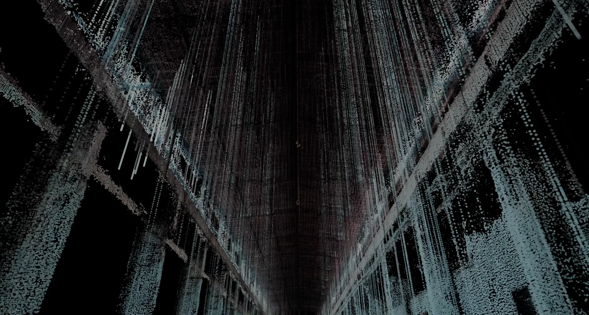
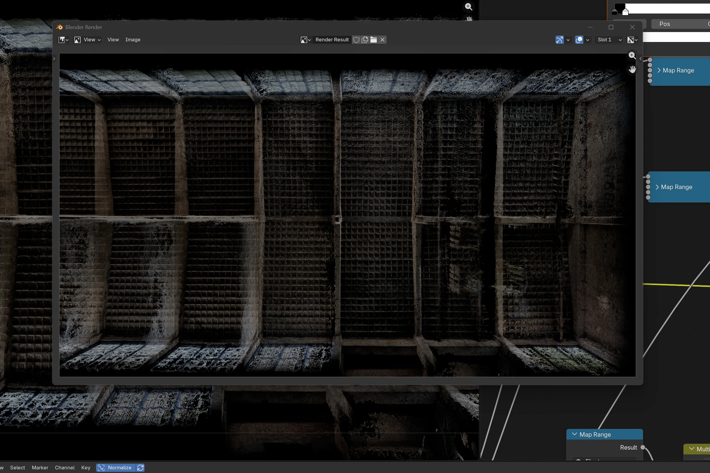

Overview / 项目简介
为纪录片制作采集建筑内部数据：以无人机飞行覆盖多层空间，经摄影测量与点云重建后，在 Blender 中形成可被镜头使用的数字建筑影像。
Capture
DJI Avata 室内无人机数据采集与多楼层覆盖
Reconstruction
Metashape 摄影测量、点云重建与楼层拼合
Visual Production
Blender 视觉处理与建筑 X-ray 式数字表达
Selected Media / 项目图片
黑色背景保留点云数据边界；剖面、立面和内部视角共同说明三层空间如何被采集和重组。





Workflow / 工作流
Capture to cinema.
室内飞行先取得连续影像，Metashape 将影像还原为空间点云；随后按楼层整理、拼合并进入 Blender，由导演镜头和影片叙事决定最终视角、材质与视觉效果。
Credits / 片尾署名
- Creative / Production
- SYSTEM系统
- Executive Producer
- Charles Guo
- Director / Cinematographer / Offline Editor / Colorist
- 施
- Assistant Camera
- 冯广浩 & 侯文建
- 3D Visual Artist
- 钱誉文 Ewan Qian
- Spatial Capture & Point Cloud
- 钱誉文 Ewan Qian
- Original Music
- Rainsoft
- Sound Effects
- 小白熊 Bi-NON
- Coordinator
- Karp
- On-site Production
- Eddie Liu
- Equipment Supplier
- 雨树暴风影业